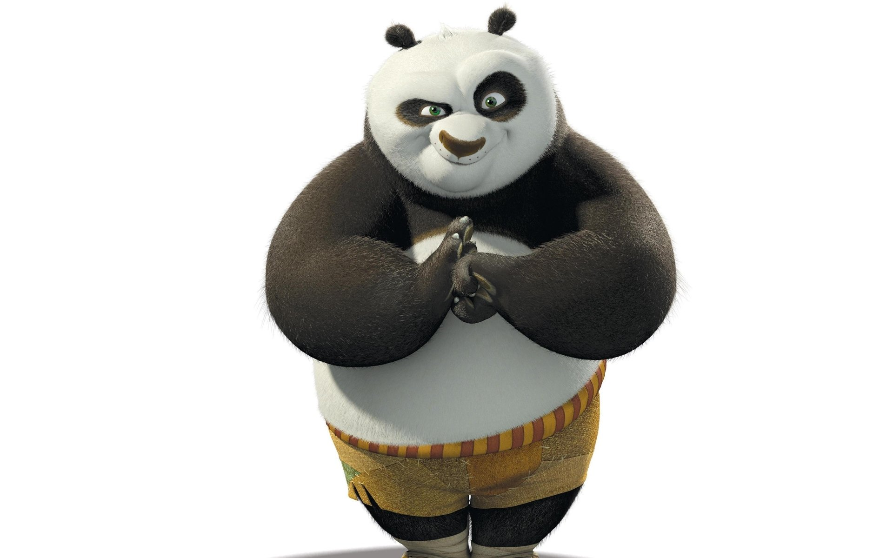

| aaaaaaaaaaaaaaaaaaaaaaaaaaa | Po |
aaaaaaaaaaaaaaaaaaaaaaaaaaa |
|---|---|---|
| Personagem principal do filme Kung Fu Panda, é um panda-gigante que contém a força do Dragão Guerreiro. | ||
|  | ||
O personagem Po, é o Dragão Guerreiro, apresenta um estilo de luta único ligado ao Dragão, mas também muito característico do personagem com golpes usando seu corpo de panda. No estilo do Dragão o praticante precisa dominar estas cinco formas que correpondem externamente a Oração, Ar, Fogo, Água e Terra e internamente ínicio, espirito, respiração(Chi), fluência e estabilidade interior. Quando o praticante domina estas cinco formas associadas externa e internamente ele está apto a perceber o poder do Dragão. |